The library
66 files, newest first.
Psychology6Technology6The human brain6Social media6Modern society6Human relationships6Health and environment6Science and reality6Money and power6The future6History6
 Why did they ignore the cure?
Why did they ignore the cure? Who are you actually trusting with your future?
Who are you actually trusting with your future? Which jobs will AI actually touch?
Which jobs will AI actually touch? Does your screen create a distorted mirror?
Does your screen create a distorted mirror? Does your screen actually help you remember?
Does your screen actually help you remember? Who sets the price you are willing to pay?
Who sets the price you are willing to pay? What is circulating in your blood right now?
What is circulating in your blood right now?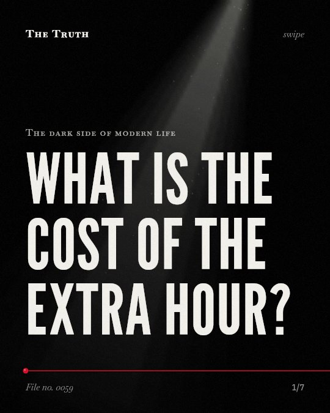
What is the cost of the extra hour? Does a like feel like a reward?
Does a like feel like a reward? Does your phone drain your brain when you are not using it?
Does your phone drain your brain when you are not using it? You assume the universe is multiplying. The evidence shows it is stable.
You assume the universe is multiplying. The evidence shows it is stable. Is there a limit to how long you can live?
Is there a limit to how long you can live? Why do we choose people who are different?
Why do we choose people who are different? Why do you forgive people but punish machines?
Why do you forgive people but punish machines? You think the leftmost digit matters. The evidence is mixed.
You think the leftmost digit matters. The evidence is mixed.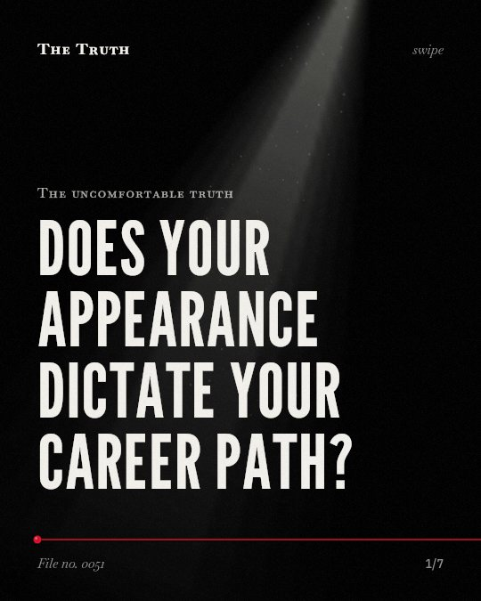
Does your appearance dictate your career path? What if the story of 38 witnesses is a lie?
What if the story of 38 witnesses is a lie? Can a game actually make you smarter?
Can a game actually make you smarter? Is your willpower actually your own?
Is your willpower actually your own? Does your screen provide connection or just a constant fear of being left out?
Does your screen provide connection or just a constant fear of being left out? Is sitting always the enemy of your health?
Is sitting always the enemy of your health? Who is setting your internal pace?
Who is setting your internal pace?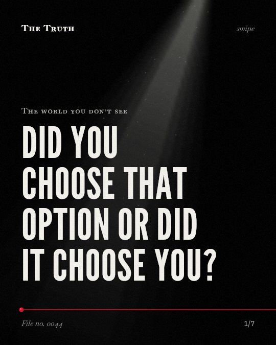
Did you choose that option or did it choose you? Is your phone making you less present?
Is your phone making you less present? Is dopamine about pleasure?
Is dopamine about pleasure? Who told the guards to be cruel?
Who told the guards to be cruel? Do violent video games change your behavior?
Do violent video games change your behavior? You think experts have the edge. The data says otherwise.
You think experts have the edge. The data says otherwise. Why does your neighbor's salary matter to you?
Why does your neighbor's salary matter to you? How much nature do you actually need?
How much nature do you actually need? What are you missing right now?
What are you missing right now? Can you tell the difference between news and an ad?
Can you tell the difference between news and an ad? Do trees really talk through fungi?
Do trees really talk through fungi? Does hearing a lie enough times make it true?
Does hearing a lie enough times make it true?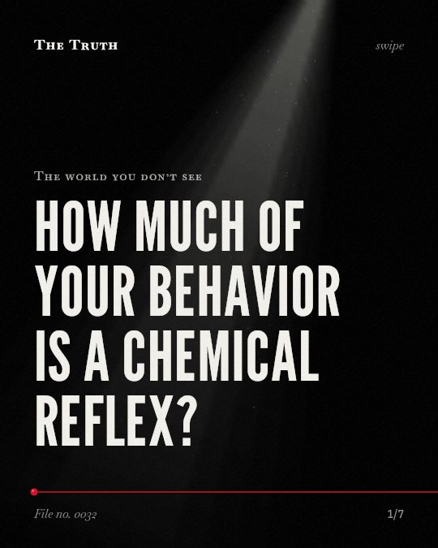
How much of your behavior is a chemical reflex?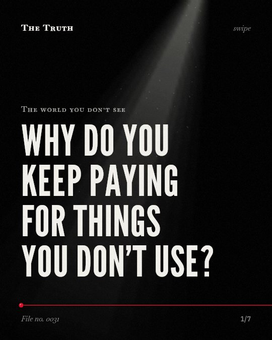
Why do you keep paying for things you don't use? Can a machine hear your thoughts before you speak?
Can a machine hear your thoughts before you speak? Is your behavior a choice or a reflex?
Is your behavior a choice or a reflex?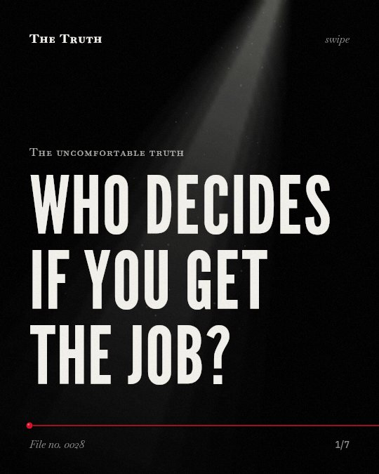
Who decides if you get the job? Does your phone ruin your conversations?
Does your phone ruin your conversations? Does the light in your home affect your weight?
Does the light in your home affect your weight? Is the air in your neighborhood aging your brain?
Is the air in your neighborhood aging your brain? Whose body are you measuring yourself against?
Whose body are you measuring yourself against? Does a screen change how a child sleeps?
Does a screen change how a child sleeps? Why do you trust a machine with your secrets?
Why do you trust a machine with your secrets?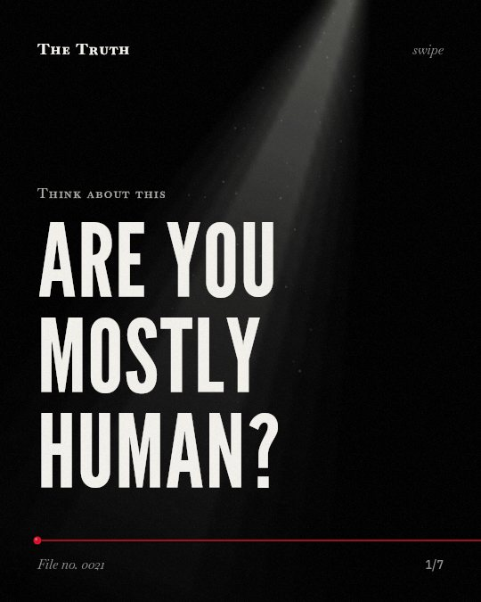
Are you mostly human?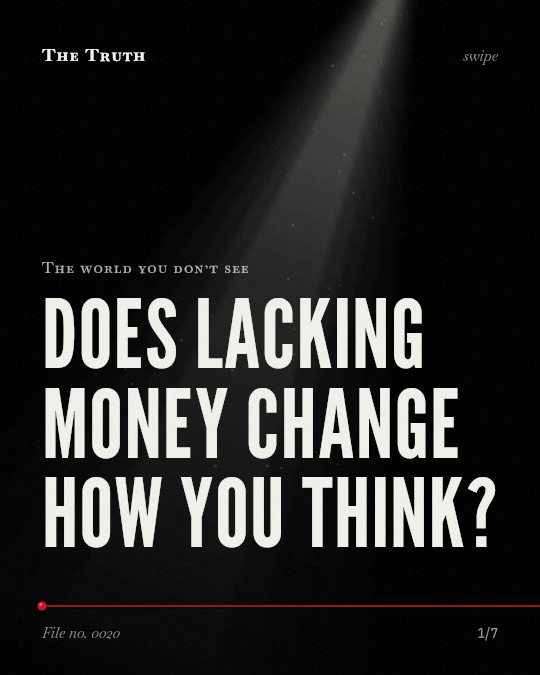
Does lacking money change how you think? Why do you eat more without feeling full?
Why do you eat more without feeling full?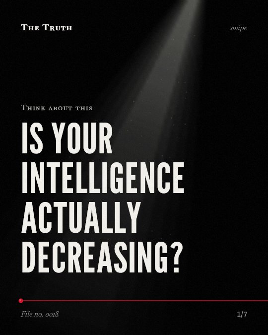
Is your intelligence actually decreasing?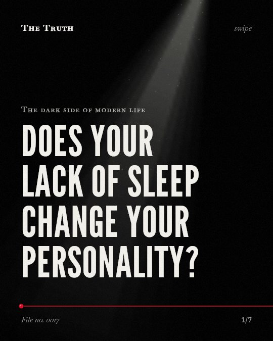
Does your lack of sleep change your personality?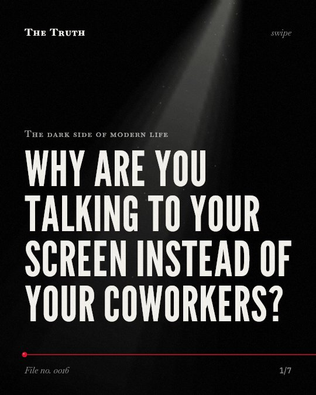
Why are you talking to your screen instead of your coworkers?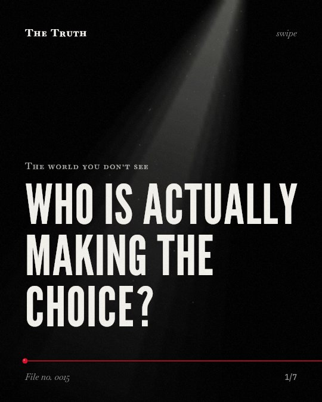
Who is actually making the choice? Does your willpower actually run out?
Does your willpower actually run out? Why do you like the people next to you?
Why do you like the people next to you?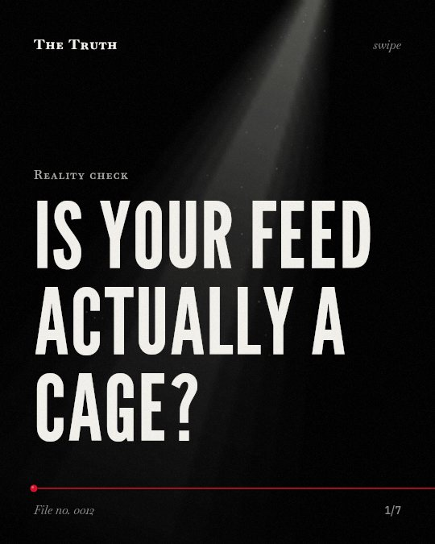
Is your feed actually a cage? Would you still obey?
Would you still obey?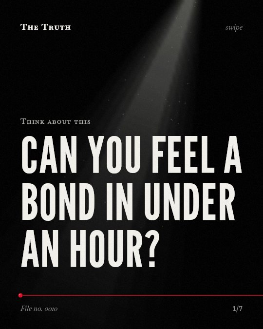
Can you feel a bond in under an hour? Can a machine see your dreams?
Can a machine see your dreams?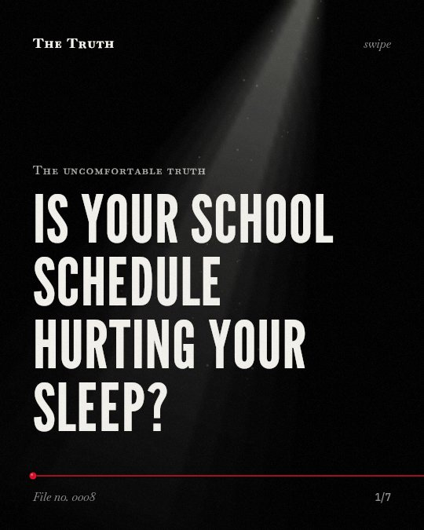
Is your school schedule hurting your sleep? Does money actually make people less moral?
Does money actually make people less moral?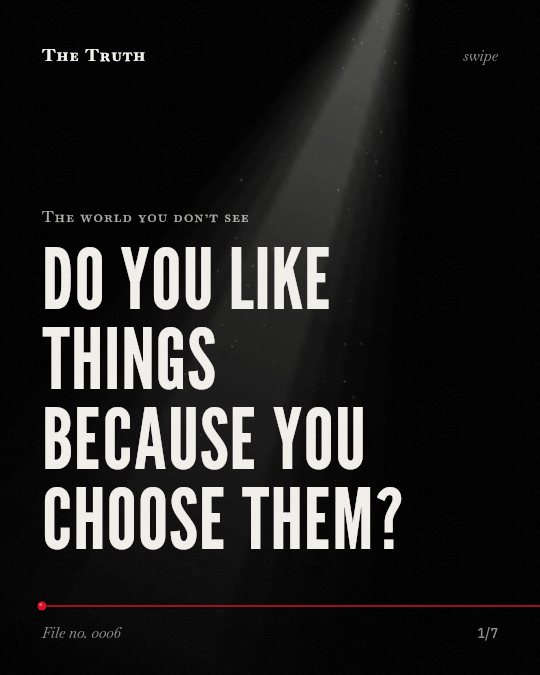
Do you like things because you choose them? Do you really need 10,000 steps?
Do you really need 10,000 steps?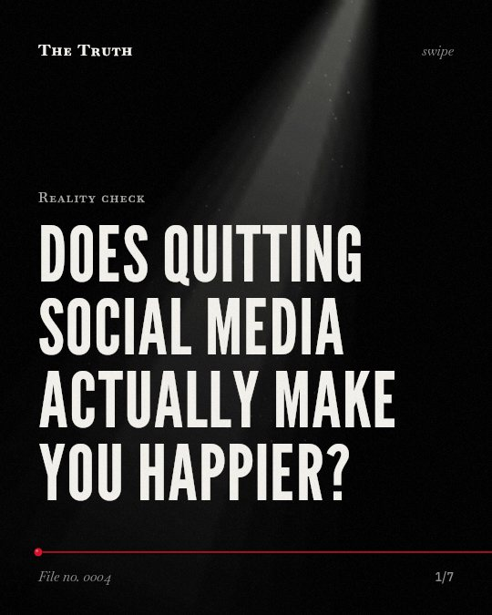
Does quitting social media actually make you happier? Are the insects really disappearing?
Are the insects really disappearing?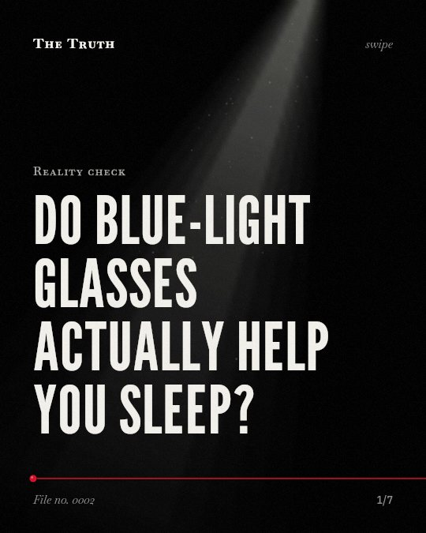
Do blue-light glasses actually help you sleep? How fast do you judge a stranger?
How fast do you judge a stranger?No file matches that yet.